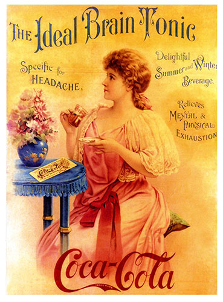

Coca-Cola

Coca-Cola was originally sold as a medicine advertised to cure headaches, exhaustion and many other illnesses
Coca-Cola was originally invented in 1886 by John Pemberton as a patent medicine. He claimed that it cured morphine addiction, headaches, nerve disorders, indigestion and impotence.
Asa Candler created one of the recipes of Coca-Cola and in 1888 bought out the Coca-Cola company.
The original recipe of Coca-Cola contained cocaine and was later completely removed in 1903.
Some of Coca-Cola's Varients:
- 1982 - present Coca-Cola Light or Diet Coke
- 1983 - present Caffeine-free Coca-Cola
- 1985 - present Coca-Cola Cherry
- 1985 - 2002 New Coke/Coca-Cola II
- 2001 - 2005 Coca-Cola with Lemon
- 2002-2005, 2007 - present Coca-Cola Vanilla
- 2013 - present Coca-Cola Life
For more information about Coca-Cola’s history and its other varients, visit their Wikipedia Entry or their History Page